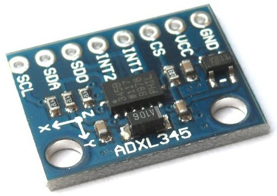

L’ADXL345 è un piccolo, sottile, a bassa potenza, accelerometro a 3 assi con alta risoluzione (13 bit) di misura fino a ± 16 g. I dati di uscita sono formattati a blocchi di 16 bit accessibili sia attraverso il bus SPI (a 3 o 4 fili) sia con l'interfaccia digitale I2C. L’ADXL345 è adatto per misurare l'accelerazione statica di gravità nelle applicazioni tilt-sensing.

#include "Wire.h"
#include "ADXL345.h"
const float alpha = 0.5;
double fXg = 0;
double fYg = 0;
double fZg = 0;
ADXL345 acc;
void setup()
{
acc.begin();
Serial.begin(9600);
delay(100);
}
void loop()
{
double pitch, roll, Xg, Yg, Zg;
acc.read(&Xg, &Yg, &Zg);
//Low Pass Filter to smooth out data
fXg = Xg * alpha + (fXg * (1.0 - alpha));
fYg = Yg * alpha + (fYg * (1.0 - alpha));
fZg = Zg * alpha + (fZg * (1.0 - alpha));
//Roll and Pitch Equations
roll = (atan2(-fYg, fZg)*180.0)/M_PI;
pitch = (atan2(fXg, sqrt(fYg*fYg + fZg*fZg))*180.0)/M_PI;
Serial.print("\tY: ");
Serial.print(pitch);
Serial.print("\t Z: ");
Serial.println(roll);
delay(500);
}
{kind=link}